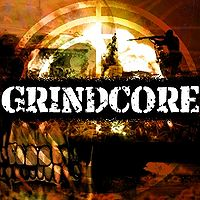

Grindcore
 De: La Frikipedia, la enciclopedia extremadamente seria.
De: La Frikipedia, la enciclopedia extremadamente seria.
| De la serie Fucking Metal:
|
| Grindcore
|
|

|
| Imagen sacada de la Kiwipedia en inglés
|
|
| ¿Dónde se comenzó a reventar oidos?
|
Gran Bretaña, ¿Dónde más?
|
| Instrumentos
|
Puercos voladores
|
| Subgéneros revienta oidos
|
Goregrind, Noisegrind, Pornogrind, Cybergrind
|
| Fusiones
|
Pornogore, Melodic Grindcore (esto no existe, pero lo pusimos para no dejar campos vacios)
|
| Los mas tesos
|
Carcass, aunque después darían un giro radical para convertirse en los papis del melodic death
|
«Aehfoaiehfuahwfuhweufhauwiehfoeuwihf!!!!»
~ Un fanático del Grindcore recitando una de sus letras favoritas.
El grindcore es un subgénero extremadamente raro, caracterizado por juntar lo más pior de lo pior del hardcore y el heavy metal. Según el Traductor Google, Grindcore puede significar: O bien Trabajo duro o Machacar/Moler/Pulverizar, realmente puede significar cualquiera de los dos, así de guay es el Grindcore.
Características
La principal característica del Grindcore es ser una tremenda lamida de huevos. O bien, sólo los tesos más tesos lo escuchan, o sólo los gilipollas más gilipollas lo hacen, quien sabe, es uno de los misterios de la humanidad (como ¿Por qué le salieron hongos a ese pan de hace tres días? ¡Todavía estaba bueno!).
Historia
Nacida de la legendaria tribu (ahora extinta) Hombre-Cerdo, este género "musical" fue creado con la finalidad de darle un aspecto más joputa a los ritos satánicos y sacrificios humanos que realizaban. El encargado por el jefe de la tribu, Metesáka II, le encargó a Punketíko IV la creación de dicha "música", explicándole exactamente lo que debía hacer. Pero como Punketíko siempre se pasaba por los mismísimos huevos las ordenes del jefe, terminó pidiéndole ayuda a su amigo de la infancia Metaltéso III, el cual pasaba por su etapa muerta, oscura y necrófila, los resultados serían catastróficos.
Lluvia de ideas
Después de que Punketíko y Metaltéso se sometieran a una sesión interminable de películas clase B y J-Horror se decidieron a crear este magistral género. Así crearon un género que sólo los hombres más hombres, y los cerdos más cerdos pueden escuchar, lo que vendría siendo aquesta cosa, tal vez debieron crearlo sin tantas cervezas encima.
Subgéneros
- Goregrind: Es exactamente lo mismo que el Grindcore (y que todos los demás subgéneros) pero con gutural, así que este es más duro. Si quieres que tu abuelita rocanrolee no le pongas esto o podría haber un final triste. Más violento y más estúpido, dirían algunos, a nosotros nos gusta pensar que sólo es Underground.
- Noisegrind: Fusión con el género Noise (ruido en inglés, que es lo que definiría perfectamente al Grindcore y todos sus subgéneros). Este género consiste en meterle ondas de microondas a la grabadora (el Noisegrind se hace con grabadora, que estudio ni que nada) para que así nadie note que no sabes cantar. Caracterizado por el ruido que le ponen de fondo al gutural, haciendo que ni Jesucristo pueda entender lo que dicen, creemos que así es mejor.
- Pornogrind: La misma jalada que las anteriores, pero ésta habla sobre fornicar y descuartizar, fornicar y descuartizar, fornicar y descuartizar, fornicar y descuartizar... y así hasta el infinito.Se caracteriza por tener de vocalista a un cerdo que solamente sabe hacer es "OINKK OINK!" y PEEGGG PIGGG PAAAAAG!!" mientras
tiene una ereccion vomita,es casi imposible escuchar las perversiones sexuales de las que se hablan.
- Mincecore: Lo mismo que toda la mierda anterior, pero con más influencia jarcor, crusti currusti y punk en general. Hay muchas bandas, pero todas suenan igual que Agathocles, así que no vale la pena conocerlas. Las letras hablan de guerras, tragedias y mierdas de esas para jipis agilipollaos.
Si quieres ser un cybergrind, tienes que vestirte así, aunque haya un calor de los mil y un cojones.
- Cybergrind: Con música electrónica. Se cree que de verdad existen degenerados que encuentran este género como "bailable". Se caracteriza principalmente por los tonos bip bip que obtienen de celulares importados de China. Las letras hablan acerca de guerras y esas cosas (o, al menos, eso creemos al observar las portadas).
Como escuchar Grindcore
- Antes que nada, darte cuenta de que no vas a encontrar nada en el Ares ni el eMule, tal vez sólo encuentres algo en el Rapidshare o el Megaupload y eso si es que tienes suerte en encontrar otro degenerado como tú.
- Ir a dormir al chiquero de la granja de tu tío Nacho, para irte acostumbrando al sonido producido por los puercos.
- Escuchar mucho death metal, mucho muuuucho Death Metal.
- Usar máscara de gas, así te confundan con terrorista.
- Dejarte crecer el pelo, sólo lo suficiente como para hacer Headbanging.
- Ser malo, mú malo (o por lo menos aparentarlo).
- Usar algo negro, como buen Jebi, y algo verde oscuro, no verde limón, no, tiene que ser un verde tan oscuro que todos (hasta el que te lo vendió) crean que es negro, pero es verde...
Bandas a conocer
Napalm Death, Agathocles, Carcass, Anal Cunt, Terrorizer, Brutal Truth.
Autor(es):
- AlemanH
- Sdrf92
- Jonathan1531
- Generibot
- Cucurrucucrusti
Frikipedia 2005-2016, Licencia
GFDL 1.2 - Extraído por FrikiLeaks